Art.
Art and fashion serve as my tactile canvases for identity and storytelling. Whether rendering concepts through painting or styling garments, I treat visual design as a living medium to explore texture, form, and personal expression.
Fashion & Styling
Fashion is wearable art. Through curating looks and conceptualizing designs, I love experimenting with silhouettes and aesthetics to tell visual stories without saying a word.
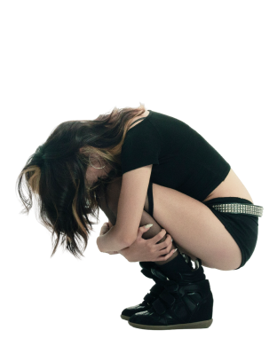
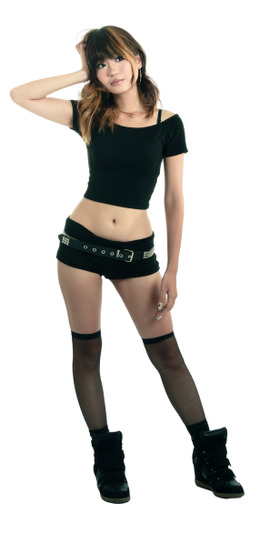
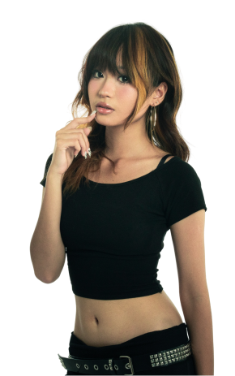
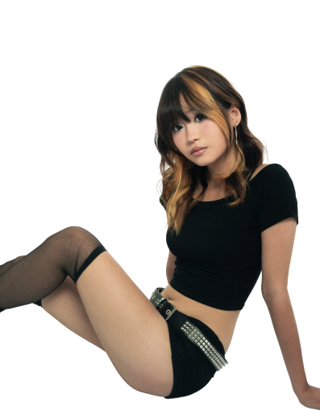
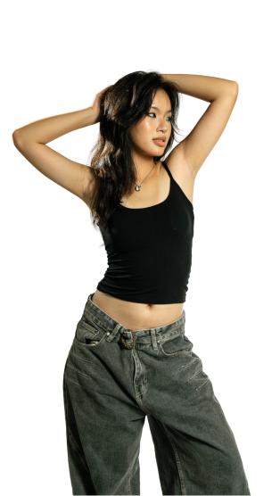
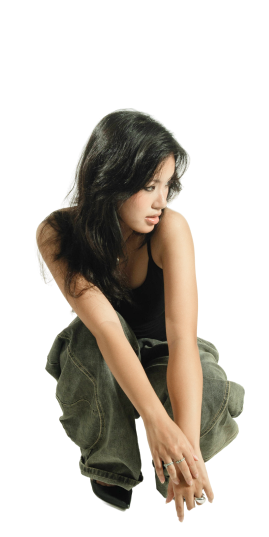
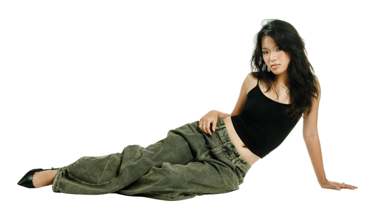
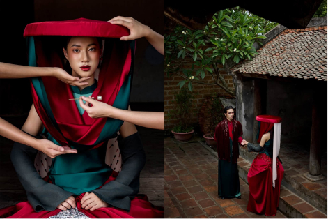
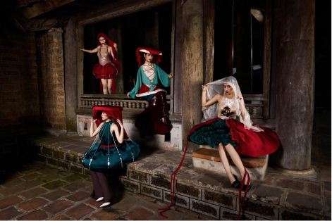
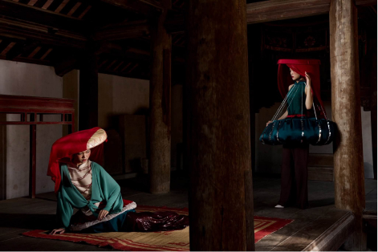
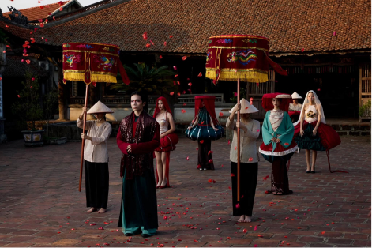
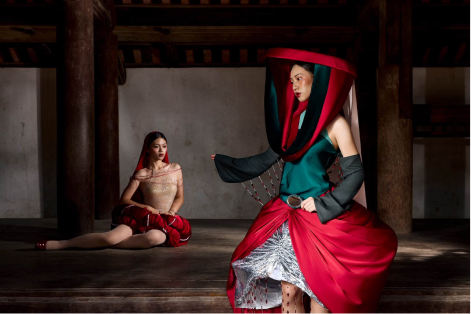
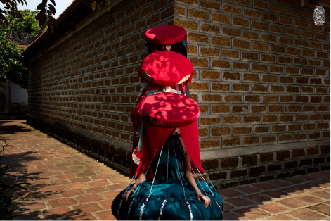
Artworks & Paintings
From acrylics to mixed media, painting is my space for raw experimentation. It allows me to translate internal thoughts and abstract emotions into tangible layers of color and texture.
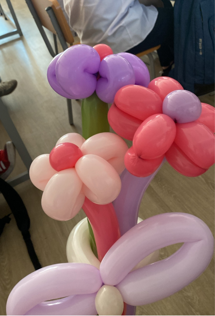
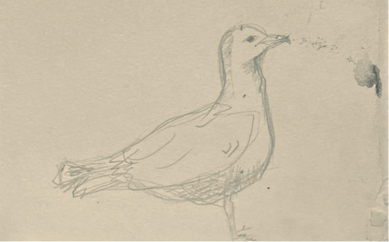
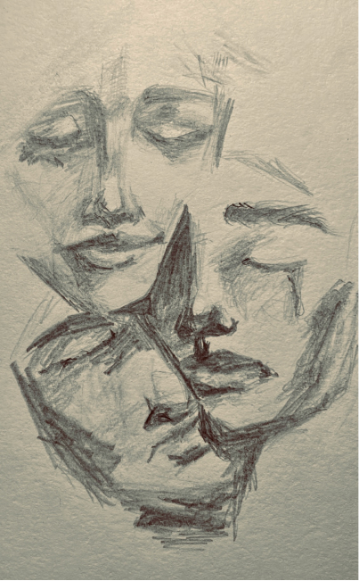